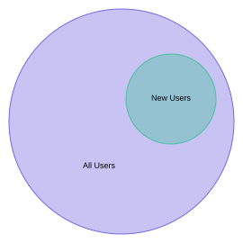

Concepts
This document describes the basic concepts of Flipt. More information on how to actually use Flipt is noted in the Getting Started documentation.
Flags
Flags are the basic unit in the Flipt ecosystem. Flags represent experiments or concepts that you want to be able to enable or disable for users of your applications.
For example, a flag named new-contact-page, could be used to determine whether or not a given user sees the latest version of a contact us page that you are working on when they visit your homepage.
Flags can be used as simple on/off toggles or with variants and rules to support more elaborate usecases.

Variants
Variants are options for flags. For example, if you have a flag colorscheme that determines which main colors your users see when they log in to your application, then possible variants could be:

Segments
Segments allow you to split your userbase or audience up into predefined slices. This is a powerful feature that enables targeting groups to determine if a flag or variant applies to them.
An example segment could be new-users.

Segments are global across the Flipt application, so they can be used with multiple flags.
Constraints
Constraints allow you to determine which segment a given user or entity falls into.
For example, for the above new-users segment, a constraint may be finished_onboarding == FALSE.

Note: In order for a segment to match, it must match ALL of it's constraints.
Rules
Rules allow you to tie your flags, variants and segments together by specifying which segments are targeted by which variants.
Rules can be as simple as IF IN segment THEN RETURN variant_a or they can be more rich by using distribution logic to rollout features on a percent basis.
Continuing our previous example, we may want to return the flag variant blue for all entities in the new-users segment. This would be configured like so:

Note: As shown, rules are evaluated in order per their rank from 1-N. The first rule that matches wins.
Distributions
Distributions allow you to rollout different variants of your flag to percentages of your userbase based on your rules.
Let's say that instead of always showing the blue variant to your new-users segment, you want to show blue to 30% of new-users, red to 10%, and green to the remaining 60%. You would accomplish this using rules with distributions:

This is an extremely powerful feature of Flipt that can help you seamlessly deploy new features of your applications to your users while also limiting reach of potential bugs.